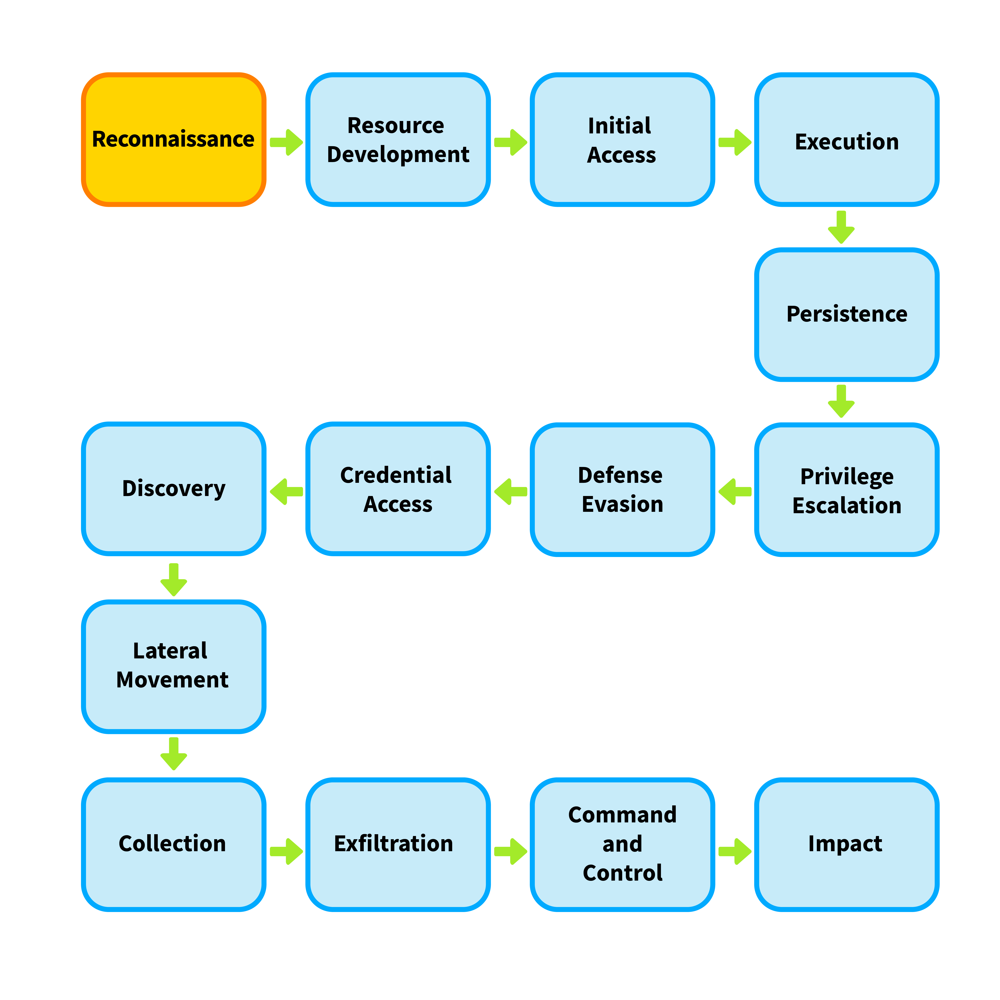
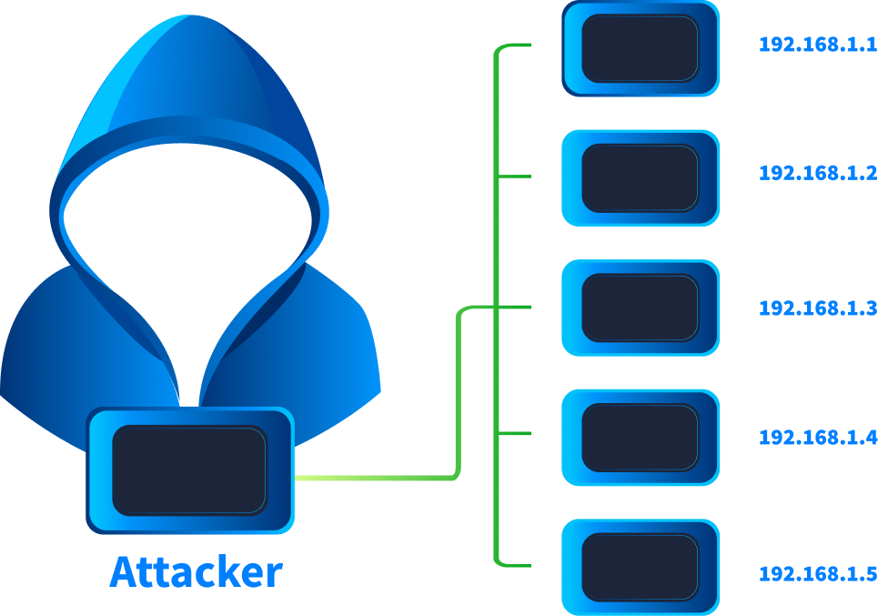
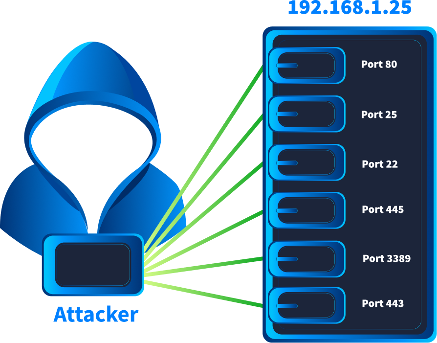
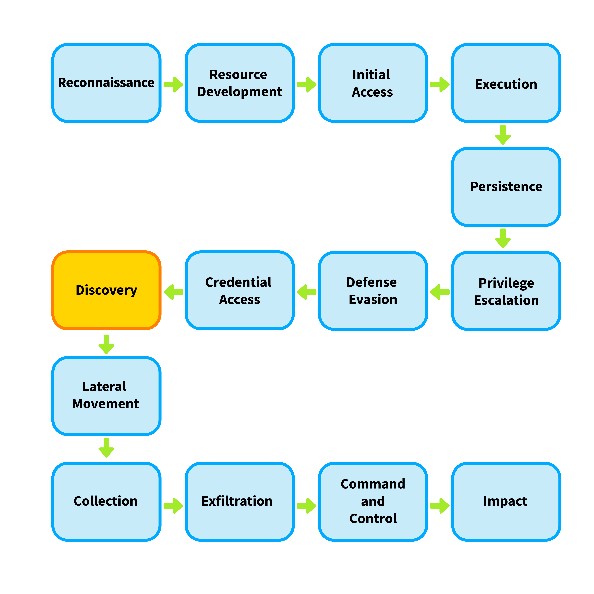
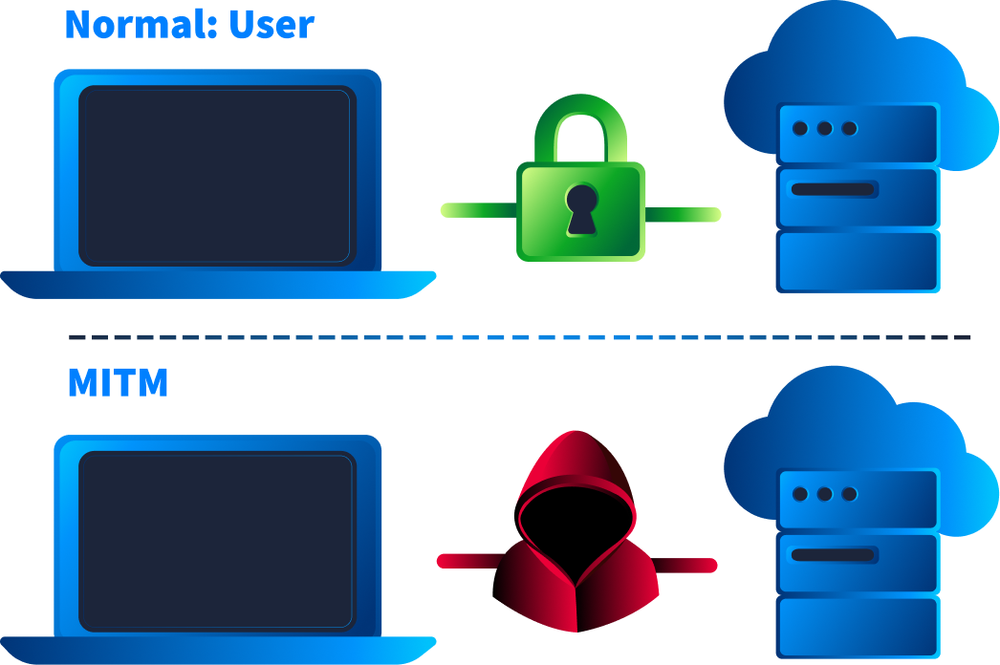
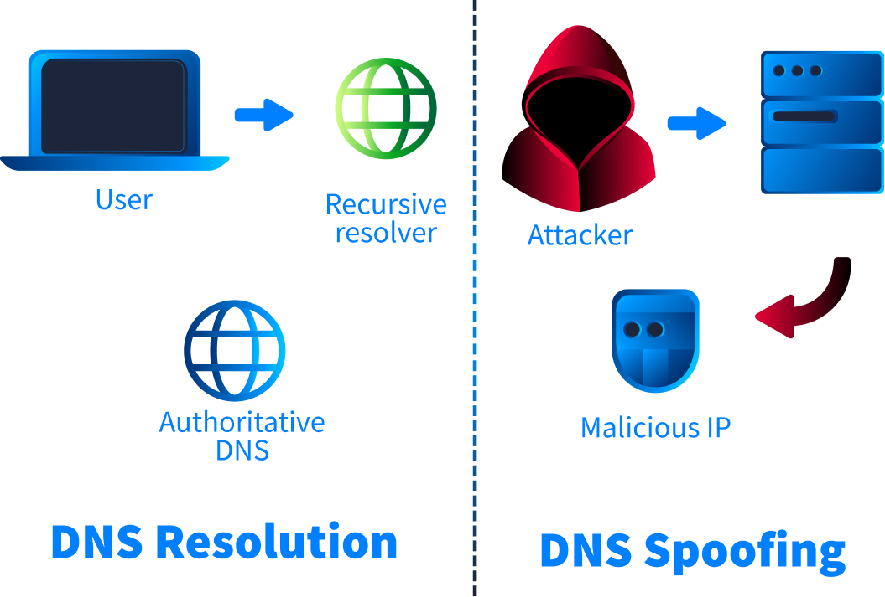
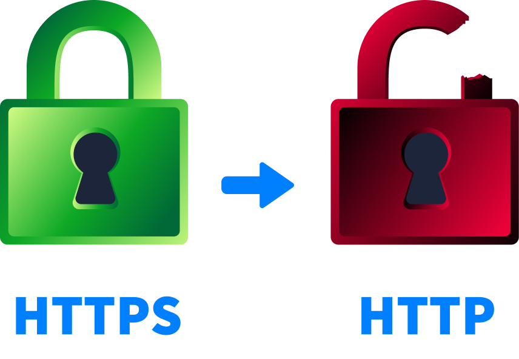

Network Incident — Hunting the Attacker on the Wire
Session 6 asked what did the malware do? Session 7 asked how did it get in? Today we ask the question the other two could not: what happened on the network — before, during and after? The wire remembers everything, and today you learn to read it packet by packet.
Today's agenda
| Block | Topic | Time |
|---|---|---|
| 1 | Recap Session 7 | 10 min |
| 2 | Why the network never lies · the evidence hierarchy (PCAP · flow · Zeek · logs) | 20 min |
| 3 | The 6-step network analysis methodology — the backbone of the whole session | 15 min |
| 4 | Wireshark — the five features that solve 80% of cases + the filter language | 25 min |
| 5 | Reconnaissance — five scan types, one simulator, five filters | 25 min |
| 6 | Host discovery & identification — ping sweep, DHCP, NetBIOS, Kerberos | 15 min |
| — | Break | 15 min |
| 7 | Sniffing & MITM — ARP poisoning, MAC flooding, DNS spoofing, SSL stripping | 30 min |
| 8 | Brute force · C2 & tunnelling · exfiltration · DoS | 35 min |
| 9 | IDS — Snort as the network tripwire, and writing your first rule | 15 min |
| 10 | The shift — Tier 1 triage → escalate → contain → PCAP forensics → recover → report | 45 min |
| 11 | Guided lab · challenge · homework | 20 min |
An endpoint can be wiped. A log can be cleared — T1070 is a real technique and attackers use it.
But the packets that already crossed the wire are gone from the attacker's control the instant they
were sent. Network evidence is the most objective record you will ever get, and reading it is what
separates a Tier 1 who forwards alerts from a Tier 2 who closes cases.
Module 4 (Analysis) — the Network Analysis module is the primary source for this entire session: what network analysis is, the types of network data sources, the six-step network-based analysis methodology, network data types & tools, network file carving, and the two labs — Investigating Network Scans and Investigating Network Attacks. Supporting: Module 3 (Detection — network logs as a source category, network-based IOCs), Maharah Tech CH04 (Network Security Incidents), and the TryHackMe network path.
What You Will Be Able To Do
Turn a capture file into a complete, defensible network incident.
- Choose the right network evidence for the question you are asking — PCAP, flow, Zeek metadata or device logs — and explain the fidelity/cost trade-off.
- Apply INE's six-step network-based analysis methodology to any capture, in order, without improvising.
- Drive Wireshark like an analyst: display filters, Follow Stream, Conversations/Endpoints, Export Objects, Expert Information.
- Recognise all five port-scan types from their packet signature and write the filter that isolates each one.
- Identify hosts and users on the wire from DHCP, NetBIOS and Kerberos traffic.
- Detect ARP poisoning, MAC flooding, DNS spoofing and SSL stripping, and name the victim, the gateway and the attacker from their MAC addresses.
- Spot brute force, C2 beaconing, DNS/ICMP tunnelling and data exfiltration in traffic.
- Read and write a Snort rule, and explain where an IDS fits between a firewall and a SIEM.
- Carve transferred files and cleartext credentials straight out of a PCAP.
- Contain, eradicate, recover and report a network incident, mapped to MITRE ATT&CK.
Say it out loud: "The alert tells you where to look. The packets tell you what happened." An IDS alert is a hypothesis. A filter that isolates the exact packets is proof.
Quick Recap — Session 7
Answer before you reveal. Last week's incident had a network half you never saw.
Q1 Which value in an email is the attacker unable to forge?
- The
From:address - The
Subject:line - The source IP in the bottom
Received:line - The
Reply-To:address
Q2 One user reported the phish. Why did you still search every mailbox?
- To find the original sender
- To measure the blast radius — the reporter is rarely the only recipient
- To recover deleted mail
- To test the mail server
Q3 In Session 7, how did you prove the user actually clicked the phishing link?
- The user said so
- The email had a read receipt
- Windows Event Log 4624
- The web proxy log showed the request to the phishing host
Every incident you have investigated so far had a network half you only glimpsed. The malware in S6 downloaded its payload and beaconed home. The phish in S7 was delivered over SMTP, clicked over HTTPS, and its C2 traffic ran through the same firewall. Today we stop glimpsing and open the capture — and you will meet both of those incidents again, this time from the wire's point of view.
Why the Network Never Lies
Every other source of evidence sits on a machine the attacker may control. Traffic does not.
"Network analysis in incident response is the process of examining network traffic and communications to detect, investigate, and understand suspicious or malicious activity within an organization's environment. It involves reviewing various forms of network data — ranging from raw packets to high-level logs — in order to trace the actions of attackers, identify compromised systems, and determine how an incident unfolded."
"Think of network analysis as the 'black box recorder' of an incident; it often holds the most objective record of what happened over the wire."
The five things network analysis gives an incident responder
INE frames these as the reasons network analysis exists inside the Detection & Analysis phase. Learn them as the five questions you can answer from traffic that you cannot answer anywhere else:
| Goal | What it means in practice | The question it answers |
|---|---|---|
| Detect intrusions early | Unauthorised connections, malware communication, abnormal traffic patterns. | "Is something here that should not be?" |
| Validate alerts | Confirm whether an IDS/IPS, firewall or SIEM alert is a true positive. | "Is this alert real?" |
| Scope the incident | Which systems talked to the attacker; which were involved in lateral movement. | "How far did it spread?" |
| Understand attacker tactics | C2 channels, exfiltration methods, privilege-escalation attempts. | "What were they actually doing?" |
| Support attribution & reporting | Evidence for the timeline, the root cause and the written record. | "Can I prove it?" |
Why an attacker cannot clean this up
An attacker can be extremely careful on the host: run in memory only, clear the Security log, delete the dropper, remove the scheduled task. But to be useful to them the implant has to talk — to receive commands, to send back data, to move sideways. Every one of those actions is a packet, and every packet is written down somewhere they cannot reach.
The more thoroughly they clean the endpoint, the more the network becomes your only evidence — which is exactly why this session exists.
Host evidence answers "what ran here?". Network evidence answers "who talked to whom, when, how much, and what did they say?" — and it answers it even when the host has been scrubbed.
The Network Evidence Hierarchy
Four kinds of network evidence. Choosing the right one for the question is the core analyst skill in this whole module.
INE lists five types of network data source. They are not interchangeable — each trades fidelity (how much detail) against cost (storage, and how far back you can go). An analyst who reaches for a full packet capture to answer "did host A ever talk to host B?" has wasted an hour; an analyst who tries to recover a stolen file from NetFlow records will never find it, because the payload was never stored.
1 — Packet Captures (PCAPs)
- Raw network traffic captured at the packet level.
- Each packet includes full headers and payloads, allowing complete session reconstruction — file downloads, chat messages, credentials in plaintext.
Tools: Wireshark (graphical deep packet inspection) · tcpdump (CLI capture and filter) · Tshark (Wireshark's CLI counterpart, for automated parsing) · NetworkMiner (session and artifact reconstruction).
- Identify malware delivery mechanisms (e.g. a malicious HTTP download).
- Detect command and control (C2) channels.
- Reconstruct attacker behaviour during lateral movement or exfiltration.
Considerations: storage-intensive; requires access to key network chokepoints or a pre-configured capture point. You will not have full packet capture of last month — plan accordingly.
2 — NetFlow / sFlow / IPFIX
Flow-based telemetry summarises communications without capturing content. Each flow record typically includes the 5-tuple (source IP, destination IP, source port, destination port, protocol), timestamps, and packet and byte counts.
| Use case in IR | Why flow is the right tool |
|---|---|
| Identify beaconing or regular-interval connections | You need the timing pattern, not the content — flow has timestamps for months back. |
| Detect scanning or brute-force attempts | The signature is "one source, many destinations/ports, tiny flows" — visible without payload. |
| Spot unusual traffic spikes or large transfers | Byte counts are exactly what flow records store. |
Tools: nfdump/nfsen · SiLK (CERT NetSA) · Elastiflow.
Considerations: lower fidelity — no payload or application-layer data; must be enabled and tuned on
routers and switches.
3 — Protocol metadata (Zeek logs)
Layer-7 insight without the storage cost of full capture: DNS queries, HTTP requests, TLS handshakes. Zeek turns traffic into structured, greppable facts. Its value in IR is spotting the misuse of legitimate services — a DNS tunnel is still "just DNS" to a firewall, but Zeek records every query name and length, which is exactly what gives it away (P14).
4 — Network logs (firewall · IDS/IPS · proxy)
Firewalls record allowed/blocked traffic, access-control enforcement, and sometimes application-layer events. IDS/IPS monitor and alert on patterns matching known threats (signatures) or anomalies.
Tools: Palo Alto, Fortinet, Cisco ASA, Check Point (firewall) · Suricata, Snort, Cisco Firepower (IDS/IPS) · Splunk, Elastic, QRadar for aggregation.
Limits: signature-based detection misses novel or stealthy attacks; high false-positive rate if not tuned.
Proxy logs capture HTTP/HTTPS requests — destination URLs, domains, user agents. DNS logs track lookups and their resolving IPs, which is critical for detecting C2 and phishing.
Tools: Blue Coat, Squid (proxy) · Zeek · Windows DNS Server logs, BIND logs.
Limits: DNS-over-HTTPS (DoH) bypasses traditional DNS logging; inspecting HTTPS through a proxy requires decryption visibility.
5 — Name resolution & authentication logs
DNS, DHCP and Kerberos logs provide asset identification and movement tracking. This is the source that turns an IP address into "the laptop belonging to a named user" — and it is the subject of P10.
In a real shift you will not be handed a PCAP. You will be handed an alert. The order is almost always: alert → SIEM (device logs) → flow → Zeek → PCAP, and you stop climbing the moment you can answer the question. Full packet capture is the last resort, not the first move — it is slow, it is huge, and it usually only exists for the last few hours.
PCAP (everything, briefly) → Zeek (layer-7 facts, weeks) → NetFlow (who/when/how much, months) → device logs (decisions, years). Match the source to the question and you will work three times faster than the analyst who opens Wireshark first.
The Network-Based Analysis Methodology
Six steps, always in this order. This is INE's framework, and it is the skeleton of everything you do for the rest of today.
Without one, packet analysis becomes scrolling. A 400 MB capture has millions of packets and no analyst has ever found an intrusion by reading them in order. The methodology exists so that every filter you type is answering a question you already decided to ask.
Step by step
- Understand the normal network behavior and topology.
- Ensure access to network monitoring tools, logs, and packet captures.
- Verify logging policies — what traffic is captured, where logs are stored, retention period.
Why it is step 1: "abnormal" is meaningless without "normal". If you do not know that your backup server legitimately pushes 40 GB every night at 02:00, you will open an exfiltration case on it.
- Start with an alert or anomaly — from IDS, SIEM, or a user report.
- Identify the initial indicators: IP addresses, ports, protocols, timestamps.
- Scope the affected systems, users, and network segments.
The habit to build: write your indicators down before you open any tool. Those four values — IP, port, protocol, timestamp — become your first filter and your time-box.
Pull the relevant network artifacts: packet captures (PCAP), flow records (NetFlow, sFlow), IDS/IPS alerts, and DNS, web proxy and firewall logs.
Time-box the data: narrow collection around key timestamps. This single instruction is the difference between a 40 MB working capture and a 12 GB one you cannot open.
Examine communications for:
- Unusual destinations — geolocation, threat-intel match.
- Abnormal ports or protocols — and never trust the port number as proof of protocol.
- Beaconing or persistence patterns — regular-interval connections.
- Large data transfers — potential exfiltration.
Then reconstruct sessions to see full conversations. Everything on pages P09–P16 is a specialisation of this one step.
Cross-reference findings with host-based logs, threat intelligence feeds and user activity. Build a timeline of events to understand attacker objectives and movements.
This is where S6 and S7 rejoin S8: a suspicious outbound connection at 14:07 means little on its own. Matched to a Sysmon process-create at 14:06 and a phishing email delivered at 13:58, it becomes a case.
Document all findings with timestamps, evidence, and conclusions. Provide an impact assessment and recommendations. Share findings with other IR teams for remediation or threat hunting.
1. Opening a giant PCAP with no filter and scrolling. Always start from Statistics →
Conversations, or from a filter tied to your indicator from step 2.
2. Trusting the port number as proof of protocol. C2 loves 443. Inspect the actual payload
or handshake — Wireshark decodes what it sees, not what the port claims.
Baseline → scope → collect (time-boxed) → analyse → correlate → report. Say the six words out loud before every capture you open. You will use this exact order in the guided lab and the challenge.
Wireshark — Five Features and One Language
You do not need to know all of Wireshark. You need five features and the filter grammar — that combination solves roughly 80% of every PCAP case you will ever be handed.
The five features that do the work
The display filter language
Wireshark's display filter grammar is simple and completely consistent: protocol.field operator value,
joined with logic. Learn the grammar once and you can filter on any field Wireshark can decode.
| Building block | Syntax | Example |
|---|---|---|
| Protocol only | proto | arp · dns · icmp · http |
| Equality | == or eq | tcp.port == 445 |
| Inequality / range | != > < >= <= | frame.len > 1400 |
| Contains (bytes/string) | contains | http.user_agent contains "sqlmap" |
| Regex match | matches | dns.qry.name matches "[a-z0-9]{25,}" |
| Logic | and or not (or && || !) | ip.addr==10.0.0.5 and not arp |
| Field exists | just name the field | http.user_agent (any packet that has one) |
ip.addr == 10.0.0.5 matches the host in either direction. ip.src
and ip.dst pin the direction. When you are hunting a scanner you want ip.src;
when you are measuring what a victim received you want ip.dst. Getting this backwards is the
single most common reason a student's filter "returns nothing".
The core filter set — put this on your second monitor
| Question | Filter |
|---|---|
| Everything to or from one host | ip.addr == 192.168.1.25 |
| One conversation only | ip.addr==192.168.1.25 && ip.addr==192.168.1.12 |
| One service | tcp.port == 21 · udp.port == 53 |
| Only SYN packets (scan hunting) | tcp.flags.syn == 1 && tcp.flags.ack == 0 |
| Only resets (closed ports / teardown) | tcp.flags.reset == 1 |
| All ICMP errors | icmp.type == 3 |
| Web requests only | http.request |
| DNS excluding local device chatter | dns && !mdns |
| Anything carrying a keyword, anywhere in the frame | frame contains "password" |
| Big packets (possible exfil chunks) | data.len > 1000 |
Statistics → Conversations sorts every pair of hosts by packet and byte count — this is how you find "the one host that talked to 254 others" (a scan) or "the one flow that moved 900 MB" (exfil) in about four seconds. Statistics → Endpoints → Ethernet lists unique MAC addresses, which is how you spot a MAC flood (P11).
Filters · Conversations · Follow Stream · Export Objects · Expert Info. Every attack on the next eight pages is detected with some combination of exactly those five things.
The Attack Arc — What It Looks Like on the Wire
Six stages, in the order an attacker actually performs them. The next eight pages walk this map one stop at a time.
MaharaTech CH04 groups network security incidents into three categories — unauthorized access, inappropriate usage and denial-of-service. That is the taxonomy. But a real intrusion is a sequence, and it leaves a different fingerprint at each stage. This is the sequence.
Notice how every detection signal in the right-hand column is a statistical shape, not a signature: one source to many destinations, many failures in a short window, a fixed interval, outbound greater than inbound. Signatures catch known tools. Shapes catch behaviour — and behaviour is much harder for an attacker to change than a payload.
Recon → MITM → brute force → C2 → exfil → DoS. Learn the shape of each one on the wire and you can name an attack from a capture in under a minute, before you have read a single payload byte.
Reconnaissance — Five Scans, Five Fingerprints
Every intrusion starts with a question: what is here? Scanning is how the attacker asks it — and it is the loudest thing they will ever do.
Scanning is the loudest thing an attacker does. They probe your network for open ports and service versions to build a target list. Five scan types exist — each leaves a different fingerprint on the wire.

The five scan types — try them yourself
Reading the results table
| Scan | Flags sent | Open port responds | Closed port responds | Wireshark filter |
|---|---|---|---|---|
TCP Connect -sT | SYN (full handshake) | SYN+ACK → ACK | RST, ACK | tcp.flags.syn==1 and tcp.flags.ack==0 and tcp.window_size > 1024 |
SYN / Stealth -sS | SYN (never completes) | SYN+ACK → RST | RST, ACK | tcp.flags.syn==1 and tcp.flags.ack==0 and tcp.window_size <= 1024 |
UDP -sU | Empty UDP datagram | silence | ICMP type 3, code 3 | icmp.type==3 and icmp.code==3 |
Null -sN | No flags at all | silence | RST | tcp.flags == 0x000 |
Xmas -sX | FIN + PSH + URG | silence | RST | tcp.flags == 0x029 |
Horizontal vs vertical — what shape is the scan?



- One source → many destination ports in under 60 seconds
- Hundreds of Conversations with < 4 packets each (Statistics → Conversations → sort by packets)
- SYN packets with
Window size = 1024on every probe (SYN/stealth scan signature) - An internal IP scanning other internal hosts — attacker already has a foothold, escalate immediately
- One source → one port → many destination IPs (horizontal scan, e.g. WannaCry sweeping SMB/445)
This TryHackMe room walks you through every scan type from the table above — Connect, SYN, UDP, NULL, FIN and Xmas — on a live target. You fire each scan, see the packets, and learn what each flag combination means on the wire. The room also covers NSE scripting and firewall evasion.
What to practise: Run each scan type, then open the capture in Wireshark and match what you see to the filters from the table above. Understanding what the scanner sends is how you learn to detect it.
Open the room · Difficulty: Easy · Tool: Nmap + Wireshark · MITRE: T1595 Active Scanning
Knowledge check — Scanning
Q1 In the Nmap room you run a SYN scan (-sS) and a Connect scan (-sT) against the same target. If you open the PCAP in Wireshark, what is the key difference between the two?
- SYN scan uses UDP, Connect scan uses TCP
- SYN scan shows SYN → SYN-ACK → RST (no handshake), Connect scan completes the full handshake
- Connect scan is faster because it skips the handshake
- SYN scan sets all six TCP flags at once
Q2 In the Nmap room you run a UDP scan (-sU). It takes far longer than TCP scans. Why can Nmap not reliably distinguish an open UDP port from a filtered one?
- UDP always completes a handshake, which adds delay
- Firewalls encrypt the ICMP response
- Open UDP ports give no response — the same as a firewall silently dropping the probe
- UDP scans require root privileges, which the room does not provide
Q3 In the Nmap room you try an Xmas scan (-sX). You see packets with FIN+PSH+URG set. For one port, the target sends nothing back. What does Nmap report?
open|filtered— no response means it cannot tell whichclosed— silence means the port is not listeningopen— no RST proves the port accepted the packeterror— Xmas scans require a three-way handshake first
Five scans, one detection rule that covers them all: conversations with fewer than four packets, one source, many targets. Then use the flag filter to name the exact technique for your report.
Host Discovery — Turning IPs Into Names
An IP address is not an answer. "The finance manager's laptop" is an answer. Three protocols on your wire will tell you which is which.
INE lists DNS, DHCP and Kerberos under "Name Resolution and Authentication Logs" because they
provide asset identification and movement tracking. When your report says
192.168.13.85 nobody can act on it. When it says "LIVALJM, the workstation used by u5"
the containment team knows exactly which desk to walk to.
Ping sweep — who is alive?
Before scanning ports, an attacker scans for hosts. A ping sweep sends probes across an IP range; whatever answers is alive. Often blocked at the perimeter, which is exactly why attackers do it from inside.
| Sweep type | How it works | Wireshark filter |
|---|---|---|
| ICMP ping sweep | ICMP echo request to each host; live hosts reply with an echo reply. | icmp.type == 8 (request) · icmp.type == 0 (reply) |
| TCP ping sweep | Probes the legacy echo service instead of using ICMP. | tcp.dstport == 7 |
| UDP ping sweep | Same idea over UDP. | udp.dstport == 7 |
A single ping is normal. The signature of a sweep is many ICMP echo requests from
one source to sequential destination IPs inside a short timeframe. Add ip.src to your
filter and sort Statistics → Conversations by destination — a sweep is a straight diagonal line down the
address space.
DHCP — the hostname is in the request
DHCP manages automatic IP address assignment, and the client tells the server its hostname while doing it. That makes DHCP the single best IP-to-hostname source in a capture.
| Goal | Filter |
|---|---|
| All DHCP traffic | dhcp (older Wireshark: bootp) |
| Only requests / ACKs / NAKs | dhcp.option.dhcp == 3 · == 5 · == 6 |
| Find a specific machine by name | dhcp.option.hostname contains "keyword" |
| Find the domain handed out | dhcp.option.domain_name contains "keyword" |
Only option 53 (message type) has fixed, predictable values. Everything else is free-form, so the workflow is: filter the packet type first, then apply the option you care about as a column and read down it. Trying to filter directly on a free-form option is how students end up with zero results and conclude "there is no DHCP in this capture".
NetBIOS (NBNS) — the legacy name service that still talks
NetBIOS lets applications on different hosts find each other by name. On modern networks it is mostly legacy — but Windows machines still broadcast it, and that broadcast is a free hostname for you.
| Goal | Filter |
|---|---|
| All NetBIOS name-service traffic | nbns |
| Find a host by name (queries carry name, TTL, IP) | nbns.name contains "keyword" |
Kerberos — the username is on the wire
Kerberos is the default authentication service for Windows domains: it authenticates service requests between machines over an untrusted network, proving identity securely. For an investigator it is the source that turns a host into a person.
| Goal | Filter |
|---|---|
| All Kerberos traffic | kerberos |
| Find a user account | kerberos.CNameString contains "keyword" |
| Users only, excluding machine accounts | kerberos.CNameString and !(kerberos.CNameString contains "$") |
| Protocol version / realm / service | kerberos.pvno == 5 · kerberos.realm contains ".org" · kerberos.SNameString == "krbtgt" |
$ rule — remember this one
In Kerberos CNameString, values that end with $ are computer accounts;
values without it are human user accounts. That one character is the difference between
"a machine did this automatically" and "a person logged in". The negative filter above is how you get a clean
list of humans out of a domain capture.
Note also that the addresses field (client IP + NetBIOS name) is only
present in request packets — filter for requests when you want that binding.
1. Start with the suspicious IP from your alert. 2. Search DHCP for that IP
in an ACK or REQUEST → you now have a hostname and a MAC. 3. Search NetBIOS to confirm the
name independently. 4. Search Kerberos for that IP in the request addresses
field → you now have a username. 5. Write all four into your case: IP, MAC, hostname, user.
Do this before you deep-dive the payload. Knowing whose machine it is often changes the whole priority of the case.
DHCP gives you the hostname and MAC. NetBIOS confirms the name. Kerberos gives you the human. Four identifiers per host, all recoverable from the capture itself, with no access to any endpoint.
Sniffing and Man-in-the-Middle
The attacker does not need to break your encryption if they can simply become the road your traffic travels on.
ARP has no authentication — a host accepts replies it never asked for. The attacker sends gratuitous ARP replies to rewrite the victim's cache, redirecting all traffic through themselves. Step through the simulator to see it happen.



arp.duplicate-address-detectedfires — two MACs claim the same IP- Flood of ARP requests from one MAC across many IPs (ARP scanning)
- Gratuitous ARP replies (
arp.opcode == 2) with no matching request - Two DNS responses for the same transaction ID with different answer IPs (DNS spoofing)
- Cleartext HTTP to a site that should be HTTPS — especially a login POST (SSL stripping)
This free TryHackMe room includes a real ARP poisoning scenario where you must identify the attacker, victim and gateway from Wireshark alone — the same three-role identification you practised in the worked example above. The room also covers DNS spoofing detection with transaction-ID analysis.
What to practise: arp.duplicate-address-detected to find the conflict, then
arp.opcode == 2 to find unrequested replies, then eth.dst on the HTTP layer to
confirm who is intercepting the traffic.
Open the room (free) · In-browser VM · covers ARP, ICMP, DNS and HTTP analysis
Knowledge check — Sniffing & MITM
Q1 In the THM Traffic Analysis room, you open the ARP exercise PCAP and need to confirm ARP poisoning. Which single filter does the room teach you to apply?
arp.duplicate-address-detectedarp.opcode == 1eth.type == 0x0806ip.src == 192.168.1.1
Q2 In the lab PCAP the duplicate-address filter fires — two MACs claim the gateway. The room asks you to identify the attacker. What technique works?
- The attacker is always the one with the higher MAC address
- Check which MAC appeared first in the capture
- Pivot to HTTP — the MAC receiving the victim's web traffic is the MITM
- Run
arp -aon the Wireshark machine
Q3 In the Traffic Analysis room's DNS exercise, after confirming ARP poisoning, you look for DNS spoofing. What evidence does the lab PCAP show?
- DNS queries with unusually long subdomain labels
- Two DNS responses for the same transaction ID, with different answer IPs
- DNS queries sent over TCP instead of UDP
- No DNS responses at all — the DNS server is unreachable
ARP has no authentication, so poisoning it is trivial — but it is loud. Duplicate address warnings, unrequested replies, ARP floods and a sudden explosion of unique MACs are all visible in Wireshark without reading a single payload byte.
Brute Force on the Wire
The attacker found an open service in stage 1. Now they knock on it a few thousand times.
Brute force needs no vulnerability — only a weak password. On the wire it has an unmistakable shape: many authentication attempts from one source, seconds apart, almost all failing.
| What you need | Filter |
|---|---|
| FTP failed logins | ftp.response.code == 530 |
| FTP success (breach!) | ftp.response.code == 230 |
| HTTP failed logins (Tomcat, web apps) | http.response.code == 401 |
| HTTP success after brute-force | http.response.code == 200 (from same source) |
| Windows failed logon (host logs) | Event ID 4625 |
| Windows successful logon | Event ID 4624 |
- Dozens of
530or401responses from one source IP in a short window - A single
230or200after a burst of failures — brute-force succeeded - Base64-encoded credentials in the HTTP
Authorizationheader (HTTP Basic Auth) - Same password tried against many usernames = password spray (different response than brute force)
- After login:
STOR/ file upload / WAR deployment — attacker establishing persistence
This free CyberDefenders lab is a real brute-force attack against Apache Tomcat. The attacker
runs directory brute-forcing (gobuster) to find /manager, then
credential brute-forcing against the login page until they get in with
admin:tomcat. After access, they deploy a malicious WAR file and get a
reverse shell — exactly the "count the failures, find the success, follow what they did next"
pattern from this page.
What to practise: filter HTTP 401 responses to count the brute-force attempts, find the single 200 that marks the breach, then follow the WAR upload and the reverse shell connection. This is the same lab you will solve in the Challenge (P27).
Open the lab (free account) · Difficulty: Easy · Tool: Wireshark · MITRE: T1110 Brute Force → T1190 Exploit Public-Facing Application
Knowledge check — Brute Force
Q1 In the Tomcat Takeover lab, you need to isolate the brute-force attempts against the Tomcat Manager. Which Wireshark filter shows only the failed login responses?
ftp.response.code == 530http.response.code == 401tcp.flags.reset == 1http.request.method == "POST"
Q2 In the Tomcat Takeover PCAP, the attacker finally logs in successfully. How do you extract the working credentials from the capture?
- Decode the Base64 value in the HTTP
Authorizationheader of the successful request - Read them from the URL query string
- Extract them from a POST form body
- Find them in a DNS TXT record
Q3 In the Tomcat Takeover lab, after login succeeds, the attacker deploys a web shell. What HTTP evidence in the PCAP reveals the deployment?
- A GET request downloading a shell script from an external server
- An FTP STOR command uploading a binary
- A POST to
/manager/html/uploadwith a multipart body containing a.warfile - A DNS query resolving the web shell's C2 domain
Count the failures to prove the attack. Find the single success to prove the breach. Then follow what the account did next — that is where the incident actually starts.
Command & Control — Hiding Inside Protocols You Cannot Block
A firewall can block a port. It cannot block DNS, and it will not block ping. Attackers know this.
Attackers hide C2 traffic inside protocols you cannot block — ICMP and DNS. ICMP tunnels carry data in oversized ping payloads; DNS tunnels encode commands as long, random-looking subdomains. Both appear after an earlier stage succeeded. Use the simulator to see how timing and query length give the attacker away.
The DNS filters
| Goal | Filter |
|---|---|
| All DNS | dns |
| Long query names — the core tunnel detection | dns.qry.name.len > 15 and !mdns |
| Known tunnelling tool signatures | dns contains "dnscat" (also look for dns2tcp) |
| Exclude local device chatter | append and !mdns to everything |
- ICMP packets with
data.len > 64— normal ping is 64 bytes; larger = tunnel - DNS query names > 15 chars with high-entropy, random-looking labels
- One host making thousands of DNS queries to a single domain nobody else queries
- Outbound requests at a fixed interval (beaconing) — humans are irregular, malware is not
- A server initiating outbound connections — servers receive, they don't call out
This free CyberDefenders lab presents a real C2 implant communicating over an exploited Apache ActiveMQ service. You must identify the attacker, the exploitation method, the C2 channel and the post-exploitation activity — applying the beaconing detection and tunnel-identification skills from this page to a capture where the C2 hides inside legitimate-looking traffic.
What to practise: identify the exploit delivery, trace the C2 callback, and determine what commands the attacker ran after gaining access. Look for the timing patterns and protocol anomalies taught in the simulator above.
Open the lab (free account) · Difficulty: Medium · Tool: Wireshark · MITRE: T1190 → T1071 Application Layer Protocol
Knowledge check — C2 & Tunnelling
Q1 In the OpenWire lab, the server has been flagged for making outbound connections to suspicious IPs. What is your first Wireshark step to identify the C2 channels?
- Filter for
dnsand look for long query names - Run Follow TCP Stream on every conversation
- Statistics → Conversations — look for outbound connections initiated by the server (abnormal for a server)
- Filter for
icmpand check payload sizes
Q2 The OpenWire lab involves exploitation of Apache ActiveMQ. What port and protocol should you filter for to find the initial exploit delivery?
- Port 80 HTTP — web application exploit
- Port 61616 — the OpenWire/ActiveMQ protocol
- Port 445 SMB — file share exploit
- Port 22 SSH — brute-force login
Q3 In the OpenWire lab, after the exploit succeeds, how do you identify the C2 callback in the PCAP?
- Look for ICMP packets with oversized payloads
- Filter for DNS queries with high-entropy subdomain labels
- Search for FTP data transfers to external hosts
- Filter for new outbound connections initiated by the server to the attacker's IP after the exploit timestamp
ICMP tunnel → oversized payloads (data.len > 64 and icmp). DNS tunnel → over-long query names
(dns.qry.name.len > 15 and !mdns). C2 in general → a regular interval. All three are visible
without decrypting anything.
Data Exfiltration on the Wire
This is the stage that turns an intrusion into a breach — and the one your legal team will ask about first.
Exfiltration is the stage that turns an intrusion into a breach. Data has to move, and moving data is measurable — even without reading the payload.
| Channel | Starting filter |
|---|---|
| DNS — data encoded in subdomain labels | dns.qry.name.len > 15 and !mdns |
| HTTP — large POST to attacker server | http.request.method == "POST" |
| FTP — file uploads in cleartext | ftp.request.command == "STOR" |
| ICMP — data in oversized ping payloads | data.len > 64 and icmp |
- Outbound > inbound for a host that normally consumes (workstation, not server)
- Large transfers at unusual hours — 03:00 from a workstation nobody was sitting at
- FTP
STORor HTTPPOSTto a destination the host never contacted before - Sustained, uniform-size chunks — automation splitting a large file, not a human
- Misspelt
User-Agentstrings in HTTP headers (e.g. "Mozlila" instead of "Mozilla")
HawkEye (Easy) is a complete phishing → credential theft → exfiltration scenario on a real PCAP. An accountant receives a malicious invoice email, opens the attachment, and a keylogger begins harvesting credentials. You trace how the stolen data leaves the network over FTP and HTTP — exactly the exfil channels from the table above, in a capture where you must find the signal yourself.
What to practise: Start with Statistics → Protocol Hierarchy to see which protocols carry data. Then filter for SMTP (email delivery), FTP-DATA (exfil channel), and HTTP POST (second exfil channel). The lab's 24 graded questions walk you through the entire kill chain.
Open HawkEye (free account) · Difficulty: Easy · Tool: Wireshark · MITRE: T1041 Exfiltration Over C2
Knowledge check — Exfiltration
Q1 In the HawkEye lab, the kill chain starts with a phishing email. What Wireshark filter helps you find the email delivery and identify the malicious attachment?
http.request.method == "POST"dns.qry.name.len > 15smtp— to see the email delivery including sender, subject and attachmentftp.request.command == "RETR"
Q2 In the HawkEye lab, the keylogger steals credentials and sends them out. What protocol in the PCAP carries the exfiltrated passwords?
- DNS TXT records
- FTP — the stolen credentials travel in clear text over FTP-DATA sessions
- ICMP echo requests with embedded payloads
- Encrypted HTTPS to a legitimate cloud provider
Q3 In the HawkEye lab, you need to identify the exfiltration destination for your report. What Wireshark approach reveals where the stolen data was sent?
- Statistics → Conversations → sort by bytes — top external destinations are the exfil endpoints
- Edit → Find Packet → search for the word "exfiltrate"
- Filter for
arp.opcode == 2to find the data relay - Check the Wireshark Expert Information panel for exfil warnings
Outbound > inbound, at odd hours, to a destination with no history. That single sentence detects exfiltration across all four channels, using flow records alone.
Denial of Service
Sometimes the goal. Sometimes just the smoke.
DoS prevents authorized users from accessing resources. Variants: DDoS (distributed — many sources) and DRDoS (reflection — spoofed source, third-party servers do the flooding). A SYN flood exhausts the connection table, not the bandwidth.
- Massive SYN count vs near-zero completed handshakes — compare
tcp.flags.syn==1 && tcp.flags.ack==0againsttcp.flags.syn==1 && tcp.flags.ack==1 - Many "different" source IPs with identical TTL — one machine, spoofed addresses
- Thousands of one-packet Conversations to a single port (Statistics → Conversations)
- A loud DoS may be cover — always check auth logs and outbound traffic during the same window
The same THM room recommended for MITM (P11) also includes a DoS/DDoS analysis task where you examine a real SYN flood, measure the SYN-to-ACK ratio, and identify the spoofed sources. Apply the filters from the card above to a capture with real background noise.
Open the room (free) · In-browser VM · Task covers SYN flood detection and spoofed-source identification
Knowledge check — Denial of Service
Q1 In the Traffic Analysis room's DoS exercise, you filter tcp.flags.syn==1 && tcp.flags.ack==0 and get 50,000 hits in 10 seconds. The server sends 50,000 SYN-ACKs but almost zero ACKs come back. What does the lab demonstrate?
- A SYN flood — the server's half-open connection table is being exhausted
- A legitimate traffic spike from a viral page
- A port scan across many ports
- A brute-force login attempt against the web server
Q2 In the lab's DoS PCAP, you add ip.ttl as a column. The flood comes from 10,000 different source IPs, but every packet has TTL = 64. What does this reveal?
- A botnet with standardised OS configurations
- All sources are on the same subnet
- The source IPs are spoofed — one machine generated all the traffic
- TTL is irrelevant to DoS analysis
Q3 The Traffic Analysis room's DoS section warns about a common analyst mistake during a flood. What does the room say you should check besides the DoS traffic?
- Nothing — all resources must focus on the DoS until it stops
- Authentication logs and outbound traffic — the DoS may be cover for a real intrusion
- The ISP billing dashboard for cost overruns
- The firewall vendor's release notes for patches
SYN in, no ACK back, many sources with one TTL. And while it is happening, look somewhere else too.
The IDS — Your Tripwire on the Wire
Everything so far was manual analysis. An IDS is how you get told to look in the first place.
A firewall blocks at the gate; an IDS watches inside and raises alerts; an IPS watches and blocks. Snort can run as either — placement and mode decide which.
Snort — modes
| Mode | What it does | When you use it |
|---|---|---|
| Packet Sniffer | Displays raw traffic on screen in real time. No logging, no detection. | Diagnosing a connectivity problem — you just need to see the wire. |
| Packet Logging | Detects in real time and logs traffic to a PCAP file. | Forensic investigation — the logged PCAP is what you do root-cause analysis on. |
| NIDS | Monitors in real time, applies the rule files, generates alerts on matches. | The primary mode — proactive monitoring, and where alerts come from. |
Rule anatomy — read one, then write one
- Encrypted payloads — IDS sees timing/volume patterns but not content
- Lateral movement inside a VLAN — traffic that never crosses the sensor's segment
- Zero-day attacks with no signature — anomaly-based detection is the only chance
- A rule that does not fire is not evidence of absence — always verify manually
This free TryHackMe room walks you through writing Snort rules from scratch, running them against live traffic and against a PCAP — exactly the three commands from this page. You will create custom rules, test them in each mode, and read the alerts they generate.
What to practise: write a rule that catches a specific protocol or content pattern, run it
with -r against a provided capture, and confirm your alert fires. Then move to
Snort Challenge — The Basics for graded practice.
Open the room (free) · In-browser VM · covers all three Snort modes + custom rule writing
Knowledge check — IDS / Snort
Q1 In the Snort room, you are given a saved PCAP and asked to analyse it offline. What command does the room teach you to run?
snort --clean evidence.pcap— removes malicious packetssnort -l evidence.pcap— logs only IP addressessnort --live evidence.pcap— replays traffic on the networksnort -r evidence.pcap— runs rules against the capture and generates alerts
Q2 In the Snort room, you write a custom detection rule. Which rule option specifies the text pattern Snort should match in the packet payload?
msgcontentsidrev
Q3 The Snort room describes three operational modes. What is the difference between NIDS mode and inline (IPS) mode?
- NIDS mode uses signatures, inline mode uses anomaly detection
- NIDS mode works on PCAPs, inline mode works on live traffic only
- NIDS mode only alerts (out of band), inline mode can drop malicious packets (in the traffic path)
- NIDS mode is free, inline mode requires a commercial licence
Firewall blocks, IDS watches and tells, IPS watches and blocks. Snort in NIDS mode is the alert source;
Snort in packet-logging mode gives you the PCAP; Snort with -r re-runs every rule against that
PCAP later. Same tool, three jobs.
The Lab You'll Use Today
Same lab as Sessions 6 and 7 — but today you care about a different thing: where the packets are captured.
Every attack in this session crosses the FGT-FW01 gateway, because KALI-ATK01 sits on the WAN and the victims sit on the LAN. That single fact is what makes the lab work for network analysis: there is one chokepoint, and it sees everything.
tcpdump runs and where Snort sits.What you use, and for what
| You use… | To… | Methodology step |
|---|---|---|
| Snort (on FGT-FW01) | Get the alert in the first place, and re-run rules over a saved PCAP. | 2 — triage |
| FortiGate traffic logs → Wazuh/Splunk | Find the conversation, the volume and the time window. Your flow-data stand-in. | 2–3 — scope & collect |
tcpdump on the gateway | Take the time-boxed capture: tcpdump -i eth1 -w case.pcap host 10.10.20.15 | 3 — collect |
| Wireshark (ANALYST-WS) | Filters, Conversations, Follow Stream, Export Objects, Expert Info. | 4 — analyse |
| NetworkMiner | Automatic session and artifact reconstruction — files, credentials, hosts. | 4 — analyse |
| Wazuh (Sysmon EID 3, auditd) | Tie a connection to the process that made it. This is the host half. | 5 — correlate |
| TheHive + Cortex | Case, observables, and enrichment of every IP and domain you find. | 5 — correlate |
| FortiGate policy / Shuffle SOAR | Block the source, isolate the segment. | — contain |
Sysmon Event ID 3 — Network Connection. It records source and destination IP and port plus the Process GUID. That is the bridge between the two halves of every investigation you will do today: the capture tells you a connection happened; EID 3 tells you which process made it. Neither answer is complete alone.
Your instructor shares the Wireshark sample captures, the Wazuh/TheHive URLs and your analyst login in class. Never post lab credentials in chat, screenshots or your report — redact them exactly as you would in a real SOC.
Tier 1 — The Alert Lands
09:41. Snort fires. You have the alert and nothing else. This is methodology step 2.
[**] [1:1000021:2] "ITGATE LOCAL — Possible TCP port scan (SYN, low window)" [**]
[Classification: Attempted Information Leak] [Priority: 2]
09/12-09:41:07.223418 {TCP} 10.10.20.15:51204 -> 10.10.20.22:445
Read the alert before you touch a tool
Methodology step 2 says: identify the initial indicators — IP addresses, ports, protocols, timestamps — and scope the affected systems, users, and network segments. Do that literally, on paper, first.
| Indicator | Value | What it already tells you |
|---|---|---|
| Rule / SID | 1:1000021:2 | A custom rule (SID ≥ 1000000), revision 2 — someone tuned it. Go read the rule text. |
| Source IP | 10.10.20.15 | Private address — this is internal. That single fact changes everything below. |
| Destination IP | 10.10.20.22 | Also internal. Private → private. |
| Destination port | 445 | SMB. A horizontal sweep of 445 is the WannaCry shape. |
| Timestamp | 09:41:07 | Your time-box anchor. Collect ±30 minutes around it. |
| Priority | 2 | Snort's opinion, not yours. Verify it. |
Private source → private destination = internal scanning = MITRE TA0007 Discovery = HIGH severity, because it means an attacker already has a foothold inside your network. If the source had been a public IP it would be external reconnaissance (TA0043), low severity, and the response would simply be "block it at the perimeter".
Same alert text. Completely different incident. Always check whether the source is inside or outside before anything else.
The three questions that decide whether this is real
- Is
10.10.20.15a known scanner? Check the allowlist — your own vulnerability scanner, asset-discovery tool or NAC probe would produce identical traffic. This is the single most common false positive in this category. If it is on the allowlist, close it and move on. - What is
10.10.20.15? Pull it from the asset inventory, and from DHCP in the capture (P10) if the inventory is stale. A server that is supposed to talk to everything is a different story from a receptionist's laptop. - Is it one alert or many? One packet to one port is noise. Search the SIEM for the same source across the last hour: if you find hundreds of destinations, this is not a single event — it is a campaign in progress, and you escalate now rather than after your analysis.
index=firewall src_ip="10.10.20.15" earliest=-1h
| stats dc(dest_ip) AS hosts_touched
dc(dest_port) AS ports_touched
count AS attempts
min(_time) AS first_seen
max(_time) AS last_seen
| eval duration_min = round((last_seen - first_seen)/60, 1)Two numbers decide the shape (P09): many hosts + one
port = horizontal sweep, hunting for one service. One host + many ports = vertical
scan, profiling one target. And duration_min tells you whether it is a fast automated tool or a
slow, deliberate, low-and-slow scan designed to stay under your threshold.
Write down IP, port, protocol, timestamp. Decide internal vs external. Check the allowlist. Count the destinations. You have not opened Wireshark yet, and you already know whether this is a false positive, a port scan, or an intrusion in progress.
Tier 1 — Collect, and Collect Correctly
Methodology step 3. Get this wrong and you will spend the next hour fighting your own evidence.
INE's step 3 says "narrow collection around key timestamps." Your anchor is 09:41:07. Collect 09:11 → 10:11. Not the whole day.
A busy gateway produces gigabytes an hour. A 12 GB PCAP will not open, will not filter responsively, and will not be attachable to a case. A 60 MB PCAP answers the same question in a quarter of the time. If your window turns out to be too narrow, widening it costs one command.
What to pull, in order
| # | Artifact | Where from | Why this order |
|---|---|---|---|
| 1 | IDS/IPS alerts for the window | Snort / Wazuh | Free, instant, and tells you what else fired that you have not been assigned. |
| 2 | Firewall / flow logs | FortiGate → SIEM | Gives you scope and volume in seconds without downloading anything. |
| 3 | DNS & proxy logs | SIEM | Names the destinations. An IP means nothing; a newly registered domain means a lot. |
| 4 | The PCAP | tcpdump on FGT-FW01 | Expensive and slow — pull it after you know exactly what to filter for. |
Taking the capture
# time-boxed, host-scoped, snapshot-length full, written to a file
sudo tcpdump -i eth1 -s 0 -w /evidence/CASE-2411-scan.pcap host 10.10.20.15
# already have a big capture? carve your window out of it instead of re-capturing
editcap -A "2026-09-12 09:11:00" -B "2026-09-12 10:11:00" full.pcap window.pcap
# still too big? split it into manageable chunks
editcap -c 200000 window.pcap chunk.pcapThe host 10.10.20.15 above is a capture filter (BPF syntax): it decides what
gets written to disk, and anything it excludes is gone forever. A
display filter (ip.addr == 10.10.20.15, Wireshark syntax) only decides what you
see — the data is all still there.
Rule of thumb: capture broadly, display narrowly. The one exception is when volume genuinely forces your hand — and then you document exactly what you filtered out, because a defence lawyer will ask.
- Hash the capture the moment it is written —
sha256sum CASE-2411-scan.pcap— and record the hash in the case before you open the file. - Work on a copy. Wireshark can modify a file; your original must stay untouched.
- Record the capture point. "eth1 on FGT-FW01, LAN side" is part of the evidence — a capture with no known vantage point cannot be interpreted, because you cannot say what it should have seen.
- Note the clock source. If the gateway's NTP is off by 40 seconds your timeline will not line up with the Windows event logs, and you will chase a ghost.
Alerts → firewall/flow → DNS/proxy → PCAP last. Time-box to the incident window. Hash it, copy it, record where it was taken. Only now do you open Wireshark.
Tier 1 — Traffic Analysis to Verdict
Methodology step 4. Six moves, in this order, every single time you open a capture.
Do not start reading packet 1. Open Statistics → Conversations, sort by packets, and look at the shape of the whole capture in ten seconds. Anomalies announce themselves as outliers: the row with 40× the byte count, or the 800 rows with three packets each.
The six moves
- Shape the capture. Statistics → Conversations (who talked to whom, how much) and Statistics → Protocol Hierarchy (what is in here at all — an unexpected 30% ICMP is a finding before you filter anything).
- Confirm the alert. Filter to the reported host:
ip.addr == 10.10.20.15. Does the traffic match what Snort claimed? If not, you may have a broken rule — which is also a finding. - Name the technique. Apply the scan filters from P09 in order and see which one matches.
Check window size to separate
-sTfrom-sS. Record the exact filter that fired. - Measure the blast radius. How many destination IPs, how many ports, over what duration? Conversations gives you all three by sorting.
- Look for stage 2. A scan is rarely alone. Filter the same source for
arp(P11),ftp.response.code == 530(P12), long DNS names (P13), and large outbound flows (P14). This is the step that turns a Tier 1 ticket into a real incident. - Identify the host. DHCP → hostname and MAC. Kerberos → username (P10). Now you can name the machine and the person in your hand-off.
| Move | Finding | Evidence |
|---|---|---|
| 1 · Shape | 1,847 TCP conversations, nearly all < 4 packets | Statistics → Conversations, sorted ascending |
| 2 · Confirm | All from 10.10.20.15, all outbound | ip.src == 10.10.20.15 |
| 3 · Name it | SYN / stealth scan — window size 1024 | tcp.flags.syn==1 and tcp.flags.ack==0 and tcp.window_size <= 1024 |
| 4 · Blast radius | 254 hosts · ports 22, 80, 445, 3389 · over 6 minutes | Conversations, grouped |
| 5 · Stage 2 | 17 FTP 530 failures then one 230 success to 10.10.20.22 | ftp.response.code == 530 then == 230 |
| 6 · Identify | 10.10.20.15 = FIN-LT-042, user a.hassan | DHCP option 12; Kerberos CNameString |
You were assigned a port-scan alert. You are now holding a successful credential compromise
on a second host. The scan was stage 1; the brute force was stage 3; and something must have happened
before the scan to put an attacker on FIN-LT-042 in the first place — which means
there is a stage 0 you have not found yet.
This is why move 5 exists. An analyst who only answers the question they were asked closes a scan ticket and misses a breach.
Reach the verdict
| Verdict | What it means | What you do |
|---|---|---|
| False positive | Known scanner, allowlisted asset, expected behaviour. | Close with the evidence. Propose a rule tune so it does not fire again. |
| True positive · contained | Real, but the firewall already blocked it and nothing succeeded. | Document, log the IOCs, monitor the source. |
| True positive · active ✅ | Real, internal, and a later stage succeeded. | Escalate to Tier 2 immediately — do not finish your write-up first. |
Shape → confirm → name → measure → look for the next stage → identify. Move 5 is the one that separates a ticket-closer from an analyst.
Escalate — The Hand-off That Actually Helps
A good escalation lets Tier 2 start responding in sixty seconds. A bad one makes them redo your whole hour.
CASE-2411 · Internal network scan → successful FTP compromise
SEVERITY: High · STATUS: Active, not contained
WHAT HAPPENED
09:41 10.10.20.15 (FIN-LT-042, user a.hassan) began a SYN scan of 10.10.20.0/24
— 254 hosts, ports 22/80/445/3389, over 6 minutes.
09:49 Same source began FTP authentication attempts against 10.10.20.22 (FILE-SRV-01).
09:52 17 failures (530), then ONE SUCCESS (230) as user 'backup'.
09:53 Session continued: CWD /finance, LIST, RETR ×4. [under analysis]
WHY IT IS HIGH
Source and destination are both internal → TA0007 Discovery, not perimeter recon.
Credential compromise CONFIRMED, not suspected.
Root cause of the initial foothold on FIN-LT-042 is NOT yet known.
EVIDENCE
/evidence/CASE-2411-scan.pcap sha256 9f2c...a71b (FGT-FW01 eth1, LAN side)
Snort SID 1:1000021:2, 1,847 alerts, 09:41:07 – 09:47:12
Filters that prove it are in the case timeline, one per finding.
OBSERVABLES (defanged)
10.10.20.15 internal · source
10.10.20.22 internal · target
ftp user 'backup' compromised account
WHAT I HAVE ALREADY DONE
Confirmed not on the scanner allowlist. Identified host + user. Logged 6 observables.
NOT contained — no blocking action taken, capture still running.
RECOMMENDED NEXT
1. Isolate FIN-LT-042 (evidence collection first — RAM before power).
2. Disable the 'backup' FTP account; rotate its credentials.
3. Determine what RETR pulled from /finance — data-impact question.
4. Find stage 0: how did the attacker get onto FIN-LT-042?Why each block is there
| Block | The question it answers for Tier 2 |
|---|---|
| What happened | "Tell me the story in timestamps, not prose." |
| Why it is high | "Justify the severity so I know whether to page anyone." |
| Evidence | "Where is the file, is it hashed, and where was it captured from?" |
| Observables | "What do I search the rest of the estate for right now?" |
| What I have already done | "What must I not repeat — and what is still live?" |
| Recommended next | "You looked at this for an hour. What do you think?" |
NOT contained — no blocking action taken, capture still running.
Tier 2 needs to know the attacker is still live and still being recorded. If they assume you already blocked the source, they will plan a slower response — and the attacker keeps working. Always state containment status explicitly, even when it is "none".
Timeline, severity justification, hashed evidence with its capture point, observables, what you did, what you recommend. Six blocks. Ten minutes to write. Saves an hour.
Tier 2 — Contain the Network Incident
Five actions, in a deliberate order. The order is the lesson.
Same rule as Session 6, and it is even sharper here: the moment you isolate the host, the live
network sessions are gone and your capture stops recording the attacker. Grab the RAM image, the
active connection list (netstat -anob / ss -tunap) and the running-process list
before you cut anything.
MaharaTech's five containment actions for unauthorized access
| # | Action | What it looks like here | MITRE mitigation |
|---|---|---|---|
| 1 | Isolate the affected systems | Move FIN-LT-042 to a quarantine VLAN. Then port-scan it yourself — you are looking for a backdoor listener the attacker left behind. |
M1030 Network Segmentation |
| 2 | Disable the affected service | Stop FTP on FILE-SRV-01, temporarily or permanently. It is a cleartext protocol that should probably not have been running at all. |
M1042 Disable or Remove Feature |
| 3 | Eliminate the attacker's route | Examine the path, block the connections, prevent inbound sessions, or disconnect the remote-access server. On the FortiGate: deny rule for the source, and check the VPN. | M1037 Filter Network Traffic |
| 4 | Disable the accounts used | Disable the backup FTP account and a.hassan's session tokens; change the passwords. Then check for accounts you did not create. |
M1036 Account Use Policies |
| 5 | Enhance physical security | Sounds out of place until you ask how did an attacker get on an internal laptop's network segment? A rogue device in an unmonitored meeting-room port is a real answer. | M1053 / physical controls |
Isolate first because it stops everything the attacker can currently do, in one action, without you needing to know what all of it is. Then disable the specific exploited service, then cut the entry path, then deal with credentials.
Getting the order backwards — blocking one IP while the compromised host stays on the production network — buys the attacker the time they need to move somewhere you are not watching.
Wireshark can generate the block rules for you: Tools → Firewall ACL Rules. Select the packet
carrying the malicious traffic, and it produces ready-to-paste rules for Netfilter (iptables), Cisco IOS
(standard and extended), IP Filter, IPFirewall (ipfw), Packet Filter (pf), and Windows Firewall
(netsh, old and new syntax) — IP-, port- and MAC-address-based.
Read them before you paste them. They are generated for implementation on the outside interface, and a rule written for the wrong direction either does nothing or takes down the segment.
Isolating instantly tells the attacker they are detected. Sometimes the better call is to keep watching — leave the host connected while capturing everything, to learn the full scope and find the other footholds before you move.
That decision is never a Tier 1 or Tier 2 call alone. It belongs to the incident commander, weighed against ongoing data loss. But you should know it exists, because "why didn't you isolate immediately?" is a question you may need to answer — and "because we were instructed to preserve visibility, here is the authorisation" is a complete answer.
Collect volatile evidence → isolate → disable the service → cut the route → kill the accounts → ask how they got on the segment. In that order.
Eradicate and Recover
Containment stopped the bleeding. Eradication removes the cause; recovery makes sure it cannot come straight back.
Network eradication is broader than malware eradication (Session 6). It is not "delete the bad file" — it is remove the root cause and harden so it cannot recur, across four domains at once.
backup credentials (auth), disable FTP or move it behind TLS (host + network), and find how the attacker reached the internal segment (physical + network).Recovery — in order, and with proof
- Identify the attack and the vulnerabilities exploited, and mitigate all of them. In our case: weak FTP credentials, a cleartext protocol, and no ARP-inspection on the switch.
- Recover from backup where there was data loss. Restore systems to a ready-to-work state and apply patches and updates to the latest version while you are in there.
- Restore and secure everything, then confirm normal operation. Verify the affected systems are functioning normally, add extra monitoring to catch related activity, and update the security policies and protection mechanisms.
After patching and restoring, run a vulnerability scan against the recovered systems (Nessus/OpenVAS) to confirm the exploited weakness is genuinely closed. Do not assume the patch worked.
Then do the network-specific version: re-capture and confirm the malicious pattern is gone. If the C2 beacon was every 300 seconds, watch for 15 minutes and confirm zero beacons. Absence of the signal, verified on the wire, is your proof of eradication — and it is far stronger than "we reset the password".
Isolate → clean → harden → restore → monitor. Same five beats in S6 (malware), S7 (phishing) and S8 (network). Learn the arc once; the tools change per incident type, the discipline does not.
PCAP Forensics — Carving the Evidence Out
The capture does not just tell you a file was stolen. It contains the file. This is the DF half of the session.
"Network file carving is the process of extracting files from raw network traffic captures (typically in PCAP format). It allows incident responders and forensic analysts to reconstruct files that were transferred across the network, often without needing access to the original endpoints."
How it works
When a file is transferred over HTTP, FTP, SMB or SMTP, its bytes are embedded in the packets. Because you captured every packet, you captured every byte of the file. Reassemble the stream in order, strip the protocol headers, and what remains is the file — bit-for-bit identical to what was transferred.
Doing it in Wireshark
| Method | How | Best for |
|---|---|---|
| Export Objects | File → Export Objects → HTTP / FTP-DATA / SMB / IMF — pick the object, Save. | Files transferred over a recognised protocol — the fast path. |
| Follow Stream → Save As | Right-click a packet → Follow → TCP Stream, switch to "Raw", Save As. | Anything Export Objects does not recognise, or a raw data channel like our FTP passive port. |
| NetworkMiner | Open the PCAP; it auto-extracts files, images, credentials and hosts into tabs. | Triage — "what is in this capture?" before you know what to look for. |
- Malware analysis — carve the payload the attacker delivered and analyse it in the sandbox (straight back to the Session 6 arc).
- Exfiltration investigations — recover the exact files that left, so you can say "payroll_2026Q3.xlsx, containing 214 employee records" and not just "approximately 25 KB left the network".
- Intrusion analysis — recover the tool the attacker uploaded (our
svc-update.sh) and prove it was a backdoor.
The difference between "some data left" and "these specific records left" is the difference between a vague breach notice and a precise one — and regulators treat the two very differently.
Some Wireshark dissectors (FTP, HTTP, IMAP, POP, SMTP) extract cleartext passwords automatically.
Tools → Credentials (Wireshark v3.1+) lists every captured username and password with its
packet number — click a row to jump straight to it. In our case it hands you the backup
account's password without you reading a single stream by hand.
Treat it as a lead, not gospel — it only covers those protocols, so still do the
manual frame contains "PASS" check for anything it misses.
The capture is not a description of the theft — it is the stolen data. Export Objects or Follow Stream reconstructs the file; hashing it proves what left. That is network forensics.
Write the Report · Map to MITRE
Same discipline as Sessions 6 and 7. The network incident just has more stages to account for.
The one-page incident report
| Section | What goes in it |
|---|---|
| Summary | What happened, when, impact, current status — one paragraph. |
| Timeline | Recon → poison → scan → brute force → theft → C2 → exfil → contained → recovered, every step timestamped. |
| Entry vector | How the attacker reached the internal segment in the first place — the stage-0 question. |
| Blast radius | Hosts scanned · services probed · accounts compromised · files taken · bytes exfiltrated. |
| IOCs | Attacker IP + MAC · compromised account · C2 domain + IP · uploaded backdoor name + hash — a copy-paste, defanged block. |
| Root cause | One sentence: how they got in and what let it succeed. |
| Actions taken | Isolated, disabled, blocked, reset, recovered, validated. |
| Lessons / gaps | What control or detection would have caught it a stage earlier. |
INE's analysis framework, applied to the wire — use it as your quality check before you submit:
- Entry vector — how did the attacker get onto the network, and onto which host?
- Lateral reach — which other hosts did they touch, scan, or authenticate to?
- Credential exposure — which accounts were used or stolen, and must be reset?
- Data impact — exactly what was accessed or exfiltrated? Any notification duty?
- Concrete eradication — exactly what was blocked, disabled, removed and re-issued.
Map the case to MITRE ATT&CK
The network attack arc from P08 maps almost one-to-one onto ATT&CK. This is the table your report ends with:
| Tactic | Technique | Evidence in this case |
|---|---|---|
| Reconnaissance / Discovery | T1046 Network Service Discovery | The SYN scan of 254 hosts, ports 22/80/445/3389 |
| Discovery | T1018 Remote System Discovery | The ARP sweep of the subnet |
| Credential Access / Collection | T1557.002 ARP Cache Poisoning | Gratuitous ARP replies spoofing the gateway MAC |
| Credential Access | T1040 Network Sniffing | The purpose of the poisoning — reading the victim's traffic |
| Credential Access | T1110 Brute Force | 17 FTP 530 failures then a single 230 success |
| Defense Evasion / Persistence | T1078 Valid Accounts | Reuse of the stolen backup account |
| Collection | T1039 Data from Network Shared Drive | Three RETR operations pulling finance files |
| Command & Control | T1105 Ingress Tool Transfer | The STOR of svc-update.sh + SITE CHMOD 755 |
| Command & Control | T1071.004 Application Layer Protocol: DNS | Fixed-interval TXT beacons with over-long query names |
| Command & Control | T1095 Non-Application Layer Protocol | Oversized ICMP echo payloads to external infrastructure |
| Exfiltration | T1048.003 Exfil Over Unencrypted Non-C2 Protocol | The large HTTP POST to the attacker's server |
| Impact (when present) | T1498 / T1499 Network / Endpoint DoS | Where a flood is used as cover or as the goal |
Know the evidence → open the capture → recognise the pattern → prove it with a filter → contain in the right order → carve the evidence out → recover, validate, and write it down. Every attacker action left a packet, and you read every one of them.
Guided Lab — Reading the Wire Together
The instructor runs each attack live from KALI-ATK01. You capture it on the gateway and work every detection you learned today, in the methodology's order.
From KALI-ATK01 the instructor runs, in sequence: an nmap ARP + SYN scan of the
LAN, an arpspoof MITM against LNX-VICTIM01, a hydra FTP brute
force, and a short dnscat2 beacon. On FGT-FW01 a tcpdump capture
is running the whole time. Lab only — all traffic stays inside the lab network.
- Prepare (step 1). Open the capture in Wireshark. First move: Statistics → Protocol Hierarchy and Statistics → Conversations. Describe the shape of the capture before filtering anything.
- Find the scan (steps 2–4). Isolate the scanner with Conversations sorted ascending by packet count. Name the scan type from its flags and window size. State the blast radius: how many hosts, how many ports, over how long.
- Find the MITM (step 4). Filter
arp.duplicate-address-detected. Identify the two MACs claiming one IP, and use the HTTP layer to prove which MAC is the attacker. Name the gateway, the victim and the attacker. - Find the brute force (step 4). Filter
ftp.response.code == 530to prove the attack, thenftp.response.code == 230to find whether it succeeded — and which account fell. - Find the C2 (step 4). Filter
dns.qry.name.len > 15 and !mdns. Measure the interval between beacons. Explain why a fixed interval is the giveaway. - Carve the evidence (DF). If a file was transferred, recover it with Follow Stream or Export Objects and hash it. If credentials crossed in cleartext, pull them with Tools → Credentials.
- Correlate (step 5). On WIN/LNX-VICTIM01, match a suspicious connection to its Sysmon EID 3 (or auditd) record — tie the packet to the process that made it.
- Report (step 6). One page plus the MITRE table. Every claim backed by the exact filter that proves it.
✅ What right looks like
- You can state the scan type and justify it from the flags and the window size.
- You named the attacker, victim and gateway from MAC evidence, and proved the attacker role from the HTTP layer, not just the ARP layer.
- You can give the exact count of failed logins and say whether the brute force succeeded, each backed by a filter.
- You measured the beacon interval and explained why it is not human traffic.
- You carved at least one artifact — a file or a credential — out of the capture and hashed it.
- You linked one network connection to a host-side process via Sysmon EID 3.
1. Scrolling packet-by-packet instead of opening Conversations first — you will run out of time before you find anything. 2. Proving the MITM attacker from ARP alone; the ARP layer shows a conflict, the HTTP layer shows who was reading the traffic. 3. Stopping at the scan. The scan was stage 1 — the brute force and the C2 are the incident.
Challenge — CyberDefenders "Tomcat Takeover"
Download the PCAP from CyberDefenders, open it in Wireshark, and answer every question from the evidence in the capture. This is a real attack — directory brute-force → credential brute-force → WAR deployment → reverse shell.
Your SOC received an alert for suspicious activity on a Tomcat web server
(10.0.0.112:8080). A PCAP was captured during the incident window. Your job: reconstruct the
full attack chain — from the attacker's first probe to the reverse shell — identify every technique, and
recommend the response.
⬇ Download the lab (free CyberDefenders account) · Difficulty: Easy · Tool: Wireshark · ~30 min
Q1 What is the IP address of the attacker?
10.0.0.11214.0.0.12010.0.0.1192.168.1.50
Q2 What tool did the attacker use for directory brute-forcing?
- gobuster
- dirb
- nikto
- nmap
Q3 Which HTTP response code indicates the brute-force authentication failures?
- 403 Forbidden
- 404 Not Found
- 401 Unauthorized
- 500 Internal Server Error
Q4 What credentials did the attacker use to log in to the Tomcat Manager?
tomcat:passwordadmin:adminmanager:manageradmin:tomcat
Q5 What type of file did the attacker upload to gain code execution?
- A WAR file (Java Web Application Archive)
- A PHP web shell
- A Python reverse shell script
- An SSH key
Q6 After deploying the WAR file, how does the attacker gain interactive access?
- SSH tunnel from the server
- A reverse shell — the server connects back to the attacker
- RDP session to the server
- DNS tunnel for command execution
Q7 What did the attacker do first after getting the reverse shell?
- Deleted log files
- Downloaded additional tools
- Ran system enumeration commands
- Created a new user account
Q8 Put the attack in order. Which sequence matches the capture?
- Directory brute-force → credential brute-force → WAR upload → reverse shell
- Credential brute-force → directory brute-force → reverse shell → WAR upload
- WAR upload → directory brute-force → reverse shell → credential brute-force
- Reverse shell → WAR upload → credential brute-force → directory brute-force
Q9 Which MITRE ATT&CK technique best describes the credential brute-force phase?
- T1190 Exploit Public-Facing Application
- T1059 Command and Scripting Interpreter
- T1078 Valid Accounts
- T1110 Brute Force
Q10 As the incident responder, what is your first containment action?
- Reboot the server
- Block the attacker IP at the perimeter firewall and take Tomcat offline
- Change the Tomcat password only
- Delete the WAR file and continue monitoring
Complete the lab on CyberDefenders for auto-graded confirmation, then write a one-page incident report with: the attack timeline, the MITRE mapping for each phase, defanged IOCs, and the Wireshark filter you used to prove each finding.
Attacker 14[.]0[.]0[.]120
Target server 10[.]0[.]0[.]112:8080 (Apache Tomcat)
Brute-force tool gobuster (directory) + HTTP Basic Auth (credentials)
Compromised account admin:tomcat
Payload malicious .war file deployed via /manager/html/upload
Post-exploitation reverse shell → system enumerationPractice on Real Captures — Public Challenge Platforms
The Tomcat Takeover challenge taught one clean arc. Now prove the skills on real, messy captures from the same platforms working analysts train on. All free.
A teaching capture is deliberately clean — one attacker, one story, no noise. Real captures are full of legitimate traffic you have to filter out before the attack shows itself. That skill — separating signal from noise — is the whole job, and you only build it on real data. These three platforms are where SOC analysts and DFIR professionals sharpen it, and every exercise below is free.
1 · Malware-Traffic-Analysis.net — the analyst's gym
Brad Duncan's site is the best-known free library of real malware and intrusion PCAPs, each packaged as a traffic-analysis exercise: a short SOC scenario, a downloadable capture, and a set of questions with a published answer sheet. This is exactly the format of our own challenge — because our challenge was modelled on it.
- A one-paragraph SOC scenario (an IDS alert, an infected host).
- A password-protected ZIP of the PCAP — the password is on the site's about page (it is the same for every file; this is just to stop antivirus eating the malware samples).
- Five-or-so questions: identify the infected host's IP, MAC, hostname, the user, and the malware.
- A linked answer sheet so you can self-mark.
The PCAPs contain real malicious traffic and real payloads. Analyse them in your lab VM, never on your host or work machine. Do not visit the live domains or IPs. Treat every file you carve as hostile — this is the same discipline you used in Session 6.
Start here: the "Traffic Analysis Exercises" index. Each entry maps directly onto a page you learned today — pick one tagged with scanning, C2, or exfiltration and work it with the six-move method from P20.
2 · CyberDefenders — structured blue-team labs
A blue-team CTF platform built for SOC analysts, threat hunters and DFIR. Its network-forensics labs give you a PCAP and a graded question set, mapped to MITRE ATT&CK — the same framing we use. Free account required. Four free labs that fit this session exactly:
| Lab | Difficulty | What you practise | Maps to |
|---|---|---|---|
| Tomcat Takeover ★ | Easy | Directory brute-force → credential brute-force → WAR deploy → reverse shell. | P12 brute force · P27 challenge |
| OpenWire | Medium | C2 implant over exploited ActiveMQ — exploit delivery, callback, post-exploitation. | P13 C2 & tunnelling |
| HawkEye | Easy | Phishing → credential theft → exfiltration via email and FTP. | P14 exfiltration |
| PacketMaze | Medium | Multi-protocol hunt across Wireshark, Brim, NetworkMiner + Suricata rules. | P05 tools · P24 carving |
3 · TryHackMe — guided, in-browser
You already have the free rooms in your homework (P29). TryHackMe's advantage is that the machine and tools run in the browser — nothing to install, safe by design — which makes it the right first step if you are still getting comfortable with Wireshark. Use it to build fluency, then graduate to the raw PCAPs above.
- Fluency — TryHackMe Wireshark: The Basics until the filter language is automatic.
- Guided reps — TryHackMe Nmap (scanning) then CyberDefenders Tomcat Takeover (brute force → shell) — easy, graded, MITRE-mapped.
- Real captures — a Malware-Traffic-Analysis.net exercise, worked cold with the six-move method and no hints.
- Depth — CyberDefenders OpenWire or PacketMaze (medium, multi-tool) once the above feel easy.
Do them in this order and each one is a small step up, not a cliff.
One real lab per scenario — the in-session map
Every topic you learned today has a matching free lab you can solve on a real capture. The instructor solves the starred one live in class; the rest are yours to work through, in this order. This is how the theory becomes muscle memory — every scenario, proven on real traffic.
| Session topic | Recommended real lab | Platform · access | What you prove on it |
|---|---|---|---|
| P07 · Wireshark fluency | Wireshark: The Basics | TryHackMe · free | The filter language and the five core features, in the browser. |
| P09 · Scanning / recon | Nmap | TryHackMe | Run every scan type, understand the packets each sends — then detect them in Wireshark. |
| P11 · Sniffing & MITM | Wireshark: Traffic Analysis | TryHackMe · free | ARP poisoning detection, DNS spoofing, MITM identification. |
| P12 · Brute force ★ | Tomcat Takeover | CyberDefenders · free acct | Directory + credential brute-force → WAR deploy → reverse shell. Challenge lab (P27). |
| P13 · C2 & tunnelling | OpenWire | CyberDefenders · free acct | C2 implant via exploited service — exploit, callback, post-exploitation. |
| P14 · Exfiltration | HawkEye | CyberDefenders · free acct | Phishing → keylogger → credential theft → exfiltration via FTP and HTTP. |
| P15 · DoS | Wireshark: Traffic Analysis | TryHackMe · free | SYN flood detection, SYN/ACK ratio, spoofed-source identification. |
| P16 · IDS / Snort | Snort | TryHackMe · free | Write a rule, run it against a PCAP, read the alerts. |
| Full arc (capstone) | MTA traffic-analysis exercise | MTA · free | A whole intrusion on one real, noisy capture — the homework. |
★ = the challenge lab (P27). Every link opens the lab directly — free account where noted.
The P27 challenge is built on Tomcat Takeover — a free, easy, MITRE-mapped CyberDefenders PCAP covering the full web-application attack arc: directory brute-force → credential brute-force → WAR deployment → reverse shell. The instructor drives Wireshark on the projector; students call out the filter for each question before it is revealed. The auto-grader on CyberDefenders confirms every finding.
Open Tomcat Takeover (free) — work through it with the six-move method from P20: shape the capture (Conversations) → confirm the alert host → name the technique → measure the blast radius → look for the next stage → identify the host and user.
For homework, each student picks a different traffic-analysis exercise from malware-traffic-analysis.net — a real capture with real noise. The format is always the same five artifacts MTA asks for, worked with today's method:
- Identify the infected host — its IP, then its MAC (P10: DHCP/ARP).
- Name the host and the user — hostname and account (P10: DHCP option 12, Kerberos/NetBIOS).
- Confirm the C2 — the malware calling home (P13: beaconing, port ≠ protocol).
- Carve the evidence — pull any transferred file and hash it (P24).
- Write the report — one page + MITRE, then check yourself against MTA's published answer sheet.
MTA publishes answer sheets for every exercise, so you get instant self-grading. Lab VM only — these are real malware captures. Never open them on your host machine.
These captures stay on their own sites. We never republish someone else's PCAP or write-up on the ITGate site — we link to the source and let students download there, exactly as we credit TryHackMe.
Homework
One CyberDefenders challenge, two MTA real-capture exercises, and one free THM room. Progress saves in this browser.
Finish the Tomcat Takeover report
RequiredDue · 24 SepComplete the challenge (P27) on the CyberDefenders Tomcat Takeover PCAP. Submit a one-page incident report with: the attack timeline, MITRE mapping for each phase, defanged IOCs, and the Wireshark filter that proves each finding. Verify your answers against the CyberDefenders auto-grader.
TryHackMe — Wireshark: The Basics (free)
RequiredDue · 24 SepThe interface, the packet panes, and the display-filter language from P07 — hands-on. If you are new to Wireshark, do this one first; everything else this week assumes it.
MTA Exercise 1 — pick any "easy" traffic-analysis exercise
RequiredDue · 27 SepPick any exercise from malware-traffic-analysis.net labelled "easy" or beginner-friendly. Download the PCAP (password on the site's about page), open it in Wireshark in your lab VM only, and identify the five standard MTA artifacts: infected host IP, MAC address, hostname, user account, and full name. Check yourself against the published answer sheet.
These are real malware captures. Never open them on your host machine, and do not visit the live domains or IPs.
MTA Exercise 2 — a different exercise, harder this time
RequiredDue · 30 SepPick a different MTA exercise — ideally one tagged with C2, RAT, or exfiltration so it covers the P13–P14 skills. Work it cold with the six-move method from P20 and no hints. Same five artifacts, same self-grading against the published answer sheet.
If the first exercise felt easy, try one from a more recent year — they tend to have noisier captures and more complex attack chains.
CyberDefenders — HawkEye or OpenWire (free)
OptionalDue · 30 SepA graded, MITRE-mapped blue-team lab (free account). HawkEye (phishing → keylogger → credential theft → exfiltration — reinforces P14) or OpenWire (C2 implant via exploited ActiveMQ — reinforces P13). Both are free and auto-graded on CyberDefenders.
Write a Snort rule for Tomcat brute-force
OptionalDue · 27 SepUsing P16, write one Snort rule that would detect the Tomcat Manager brute-force from
P27 — either by matching the HTTP 401 response pattern or the /manager/html URI with a failed
auth. Give it a custom SID (≥ 1000000) and a clear msg.
Build the 5-scan-type cheat card
OptionalDue · 27 SepMake a one-page reference for the five port scans (Connect, SYN, UDP, Null, Xmas): flags
sent, open-port response, closed-port response, and the exact Wireshark filter for each. This becomes your own
desk reference — verify each filter against a real nmap capture from your lab.
Free labs only — you never need a subscription for homework. All CyberDefenders labs above work with a free account. MTA exercises are completely free with published answer sheets. The premium THM network path (IDS Fundamentals, Data Exfiltration, MITM Detection, Wireshark: Traffic Analysis) is used in class, instructor-led. Progress is saved in this browser.
References
Primary source — INE eCIR v2
| Topic | INE module |
|---|---|
| Network analysis definition · goals · the six-step methodology · network data types & tools · file carving · the two network labs | Module 4 (Analysis) |
| Network logs as a source category · network-based IOCs (C2, beaconing, port anomalies) | Module 3 (Detection) |
Supporting source — Maharah Tech (Incident Handling, CH04)
Network Security Incidents: the three incident categories, the preparation checklist and toolkit, the 14 detection indicators, sniffing/spoofing detection (MAC flooding, ARP poisoning), brute-force detection via Event Viewer, the four-domain eradication model, and the reconnaissance + port-scan detection filters (including the Null and Xmas scans INE's labs do not cover). Diagrams in this session were redrawn in the ITGate theme.
Reinforcement labs — TryHackMe (network path)
| Room | Reinforces | Access |
|---|---|---|
| Wireshark: The Basics | P07 — interface & filters | Free · homework |
| Network Security Essentials | P04–P06 — foundations | Free · homework |
| Network Discovery Detection | P09–P10 — scans & recon | Free · homework |
| Wireshark: Traffic Analysis | P09–P16 — the whole attack arc | Premium · in-class |
| IDS Fundamentals | P16 — Snort | Premium · in-class |
| Data Exfiltration / MITM Detection | P11, P13–P14 | Premium · in-class |
Real-capture practice platforms (P28)
| Platform | What it gives you | Access |
|---|---|---|
| Malware-Traffic-Analysis.net | Real malware/intrusion PCAPs as SOC scenarios, with answer sheets. The model our own challenge is built on. | Free · answer sheets |
| CyberDefenders | Graded, MITRE-mapped blue-team labs — Tomcat Takeover, OpenWire, HawkEye, PacketMaze. | Free account |
| Netresec public PCAPs | A large index of publicly available capture files for extra practice. | Free |
S6 was the malware half of an incident; S7 was the delivery half; S8 is the wire that connected them both. Next, Session 9 moves up the stack to the application — web attacks in the logs and the insider threat. The capture skills you built today never leave you: every session from here on has a network dimension you can now read.
Every lab in this session uses free, external platforms — CyberDefenders (free account), TryHackMe (free rooms), and Malware-Traffic-Analysis.net (completely free with answer sheets). We link to the source and let students download there. No THM content is republished — TryHackMe rooms are linked as labs, never copied onto the site.
Navigate with ← → arrow keys